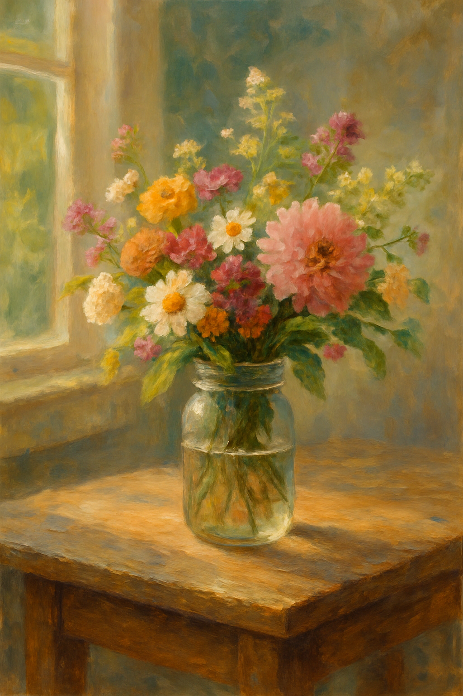

Mast Family Flowers is more than a business – it’s our family’s way of sharing beauty and joy with our community in the Hillsboro/Beaverton area. Our founder, Joyce Mast, began planting flowers years ago to add colour to her home. What started with a handful of rows soon became a patchwork of blooms stretching across our front and back fields. Friends and neighbours couldn’t help but notice, and before long Joyce was crafting bouquets for birthdays, anniversaries and dinner tables.
Encouraged by her sons and daughters (that’s us!), Joyce took the leap to open a small flower farm. We follow sustainable growing practices, use organic amendments whenever possible and choose varieties that thrive in Oregon’s climate. From spring tulips to summer zinnias and autumn dahlias, each season brings a new palette to work with. We still do most of the work ourselves, from seed to harvest, and we love welcoming visitors to the farm.
Our name pays tribute to our roots – family, hard work and a dash of humour. We like to say we’re taking the work out of paperwork by trading spreadsheets for flower beds and emails for freshly cut stems. When you visit or purchase from us, you’re supporting a dream that grew from the soil up.